Multitask regression demo
PMTKslow
Contents
% This file is from pmtk3.googlecode.com function multitaskRegDemo() seeds = [1 2 3]; plotFns = true; % set to false to reduce number of plots for seedi=1:length(seeds)
seed = seeds(seedi);
Generate training data
setSeed(seed);
Ds = [1 50];
for Di=1:length(Ds)
D = Ds(Di);
if D==1
Ntrain = 20;
else
Ntrain = round(1.5*D);
end
Ntest = 100*D;
Xtrain = randn(Ntrain, D);
if D==1
Xtest = linspace(min(Xtrain), max(Xtrain), 100)';
T = 5;
else
Xtest = randn(Ntest, D);
T = 25;
end
Ks = [1 5];
for Ki=1:length(Ks)
K = Ks(Ki);
mu = 5*randn(D,K); % common mean
Sigma = repmat(0.01*randpd(D), [1 1 K]);
mixweight = normalize(ones(1,K));
%W = gaussSample(struct('mu', mu, 'Sigma', Sigma), T)';
[W, z]= mixGaussSample(mu, Sigma, mixweight, T);
W = W'; % W(:,t) is weight vector for task t
%figure; imagesc(W);
%figure; plot(z)
w0 = 5*randn(1,T); % intecepts are not similar across tasks
ytrain = zeros(Ntrain, T);
ytest = zeros(Ntest, T);
ftest = zeros(Ntest, T); % no noise
sigma2 = 5*ones(1,T);
Xtrain1 = [ones(Ntrain,1) Xtrain];
Xtest1 = [ones(Ntest,1) Xtest];
for t=1:T
w = [w0(t); W(:,t)];
ytrain(:,t) = Xtrain1*w + sigma2(t)*randn(Ntrain,1);
ftest(:,t) = Xtest1*w;
ytest(:,t) = ftest(:,t) + sigma2(t)*randn(Ntest,1);
end
Plot truth (if 1D)
[styles, colors, symbols] = plotColors;
if D==1 && seedi==1 && plotFns
figure; hold on;
for t=1:T
%plot(Xtrain, ytrain(:,t), sprintf('%s%s', colors(t), symbols(t)));
plot(Xtest, ftest(:,t), sprintf('%s%s', colors(t), styles{t}), 'linewidth', 2);
end
title('true functions');
printPmtkFigure(sprintf('multitaskRegTruthD%dK%d', D, K))
end
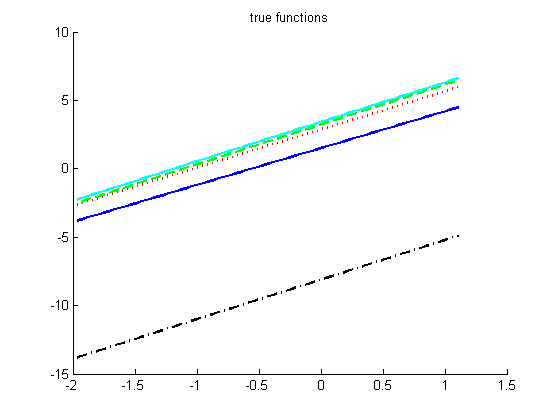 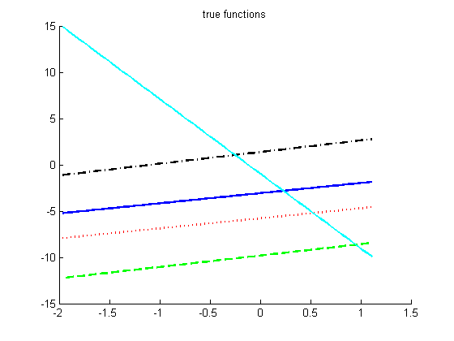 Fit models to different subsets of training data
if D==1 Ns = [3 6 9 12 15]; else Ns = round(linspace(D+1, Ntrain, 6)); end Nns = length(Ns); methodStr = {'Separate', 'Pooled'}; Nmethods = length(methodStr); ypred = zeros(Ntest, T, Nns, Nmethods); mse = zeros(T, Nns, Nmethods); for ni=1:Nns N = Ns(ni); for method=1:Nmethods modelEst = fitModels(Xtrain(1:N,:), ytrain(1:N,:), method); for t=1:T ypred(:,t,ni, method) = linregPredict(modelEst{t}, Xtest); mse(t, ni, method) = mean( (ypred(:,t,ni, method) - ftest(:,t)).^2 ); end end end
Plot error
[styles, colors, symbols] = plotColors;
figure; hold on
for m=1:Nmethods
plot(Ns, mean(mse(:,:,m),1), sprintf('o%s%s', colors(m), styles{m}), 'linewidth', 2);
xlabel('N'); ylabel('mse on test');
end
title(sprintf('D=%d, T=%d, K=%d, seed=%d', D, T, K, seed))
legend(methodStr)
if seedi==1
printPmtkFigure(sprintf('multitaskRegMseD%dK%d', D, K))
end
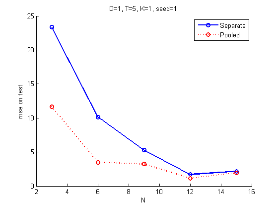 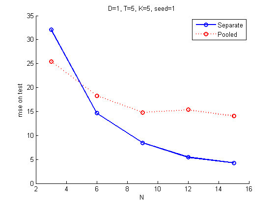 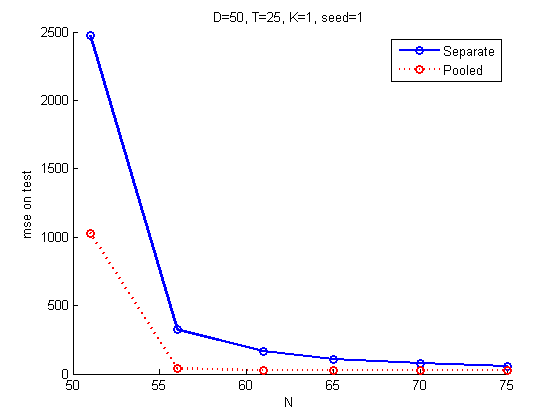 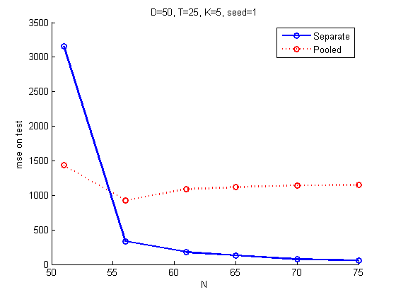 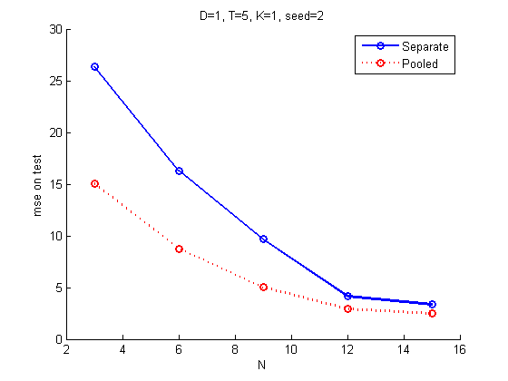 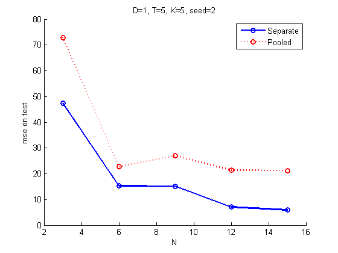 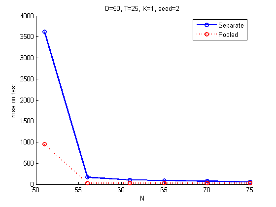 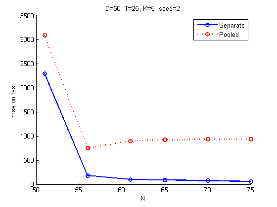 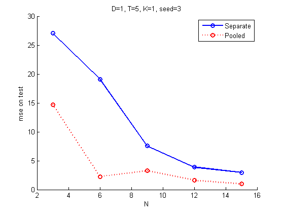 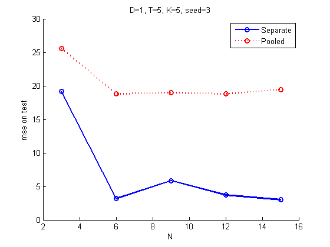 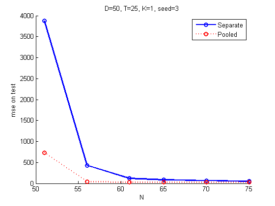 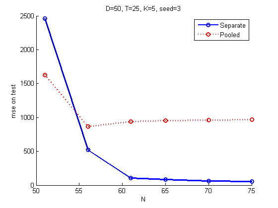 Plot fit (if 1D)
if D==1 && (seedi==1) && plotFns for method=1:Nmethods for ni=1:min(3,Nns) N = Ns(ni); figure; hold on for t=1:T if N<=10 % too cluttered to show more than 10 points plot(Xtrain(1:N,:), ytrain(1:N,t), sprintf('%s%s', colors(t), symbols(t))); end plot(Xtest, ypred(:,t,ni,method), sprintf('%s%s', colors(t), styles{t}), 'linewidth', 2); end title(sprintf('D=%d, K=%d, N=%d, %s', D,K,N,methodStr{method})); printPmtkFigure(sprintf('multitaskReg%sD%dK%dN%d', methodStr{method}, D, K,N)) end end end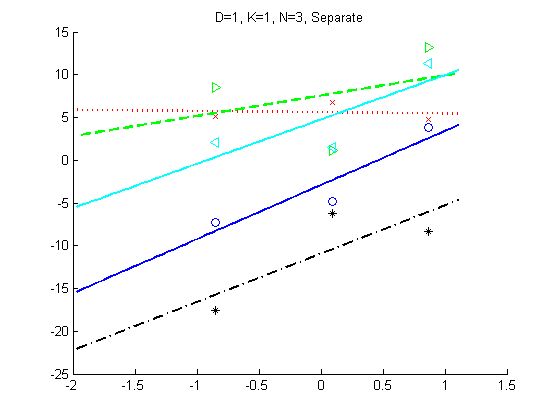 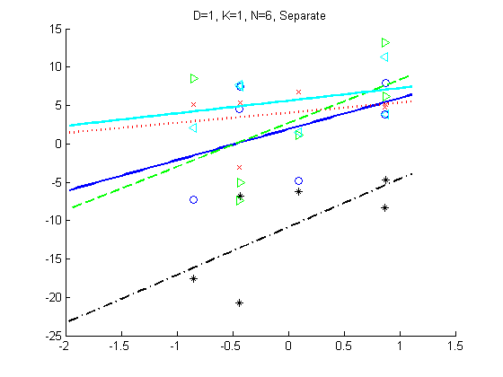
 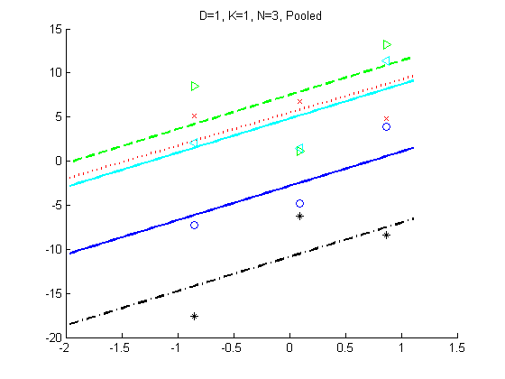 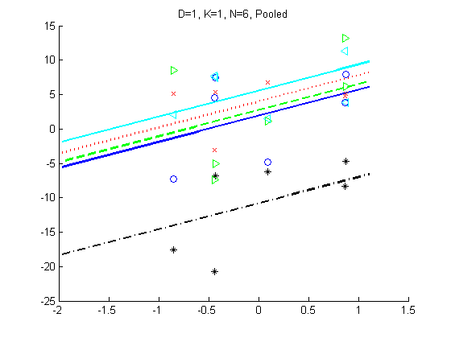 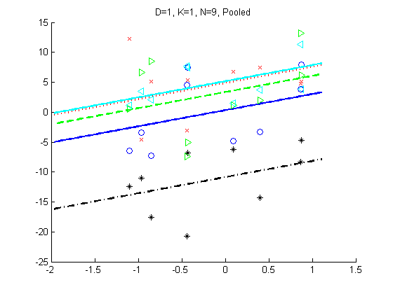 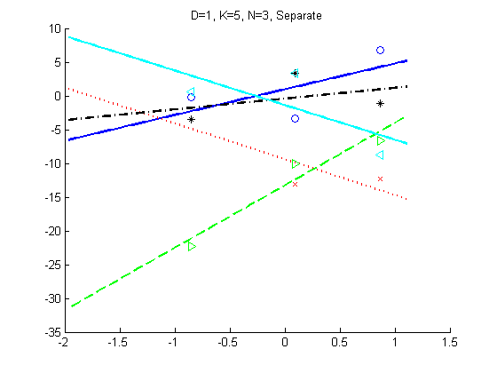 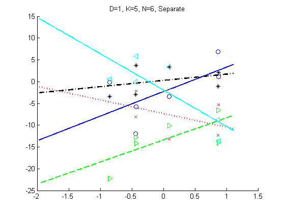 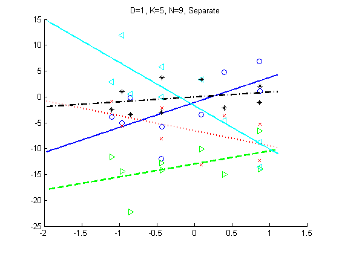 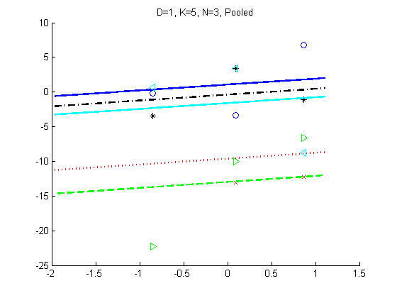 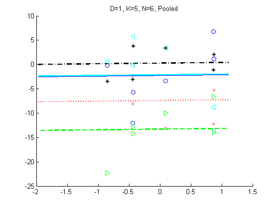 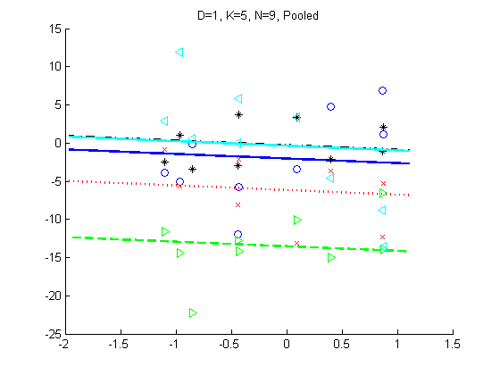
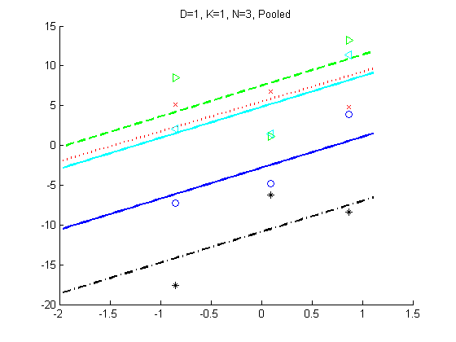 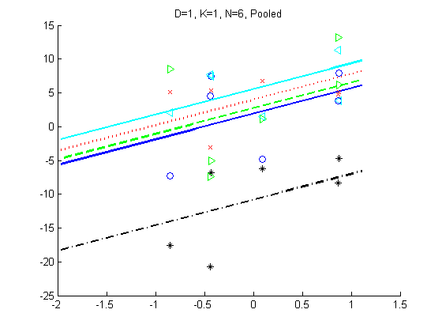 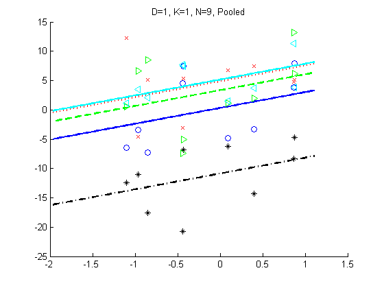 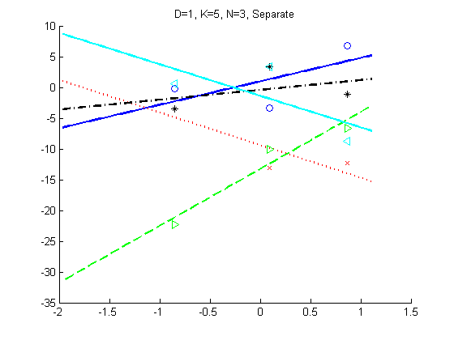 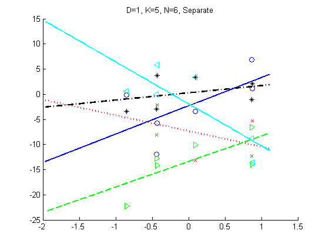 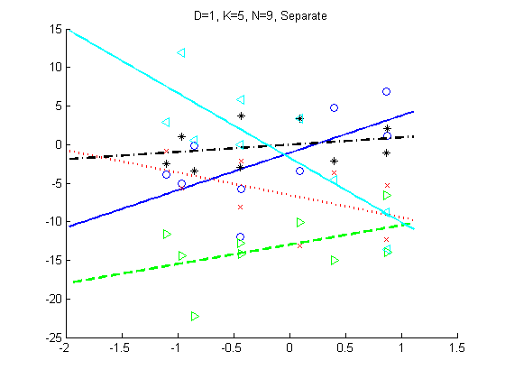 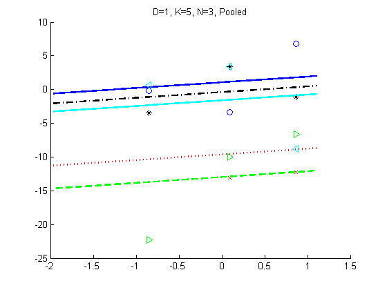 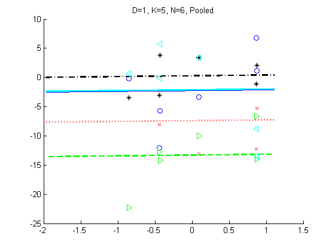 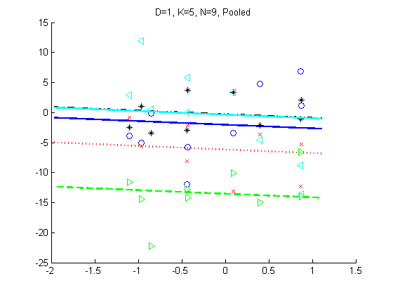 end end
end placeFigures end % function function models = fitModels(X, Y, method) T = size(Y,2); models = cell(1,T); D = size(X,2); w0 = zeros(1,T); W = zeros(D,T); sigma2 = zeros(1,T); % First fit models independently for t=1:T lambda = 0.001; % for numerical stability models{t} = linregFit(X, Y(:,t), 'regtype', 'L2', 'lambda', lambda); w0(t) = models{t}.w(1); W(:,t) = models{t}.w(2:end); sigma2(t) = models{t}.sigma2; end % Now optionally do improved fit for t=1:T switch method case 1, % independent % no-op case 2, % MAP estimate using pooled estimate for prior [y, ybar] = centerCols(Y(:,t)); mu = mean(W,2); S0 = 0.01*eye(D); % setting variance of the prior S0inv = inv(S0); SN = inv(S0inv + (1/sigma2(t))*X'*X); Wmap(:,t) = SN*S0inv*mu + (1/sigma2(t))*SN*X'*y; %#ok %Wmap(:,t) = inv(X'*X)*X'*y; %S0=inf models{t}.w(2:size(Wmap, 1)+1) = Wmap(:,t); models{t}.w(1) = ybar - mean(X)*models{t}.w(2:end); otherwise error('unknown method') end end end